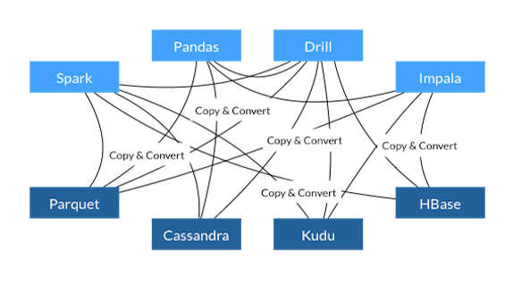
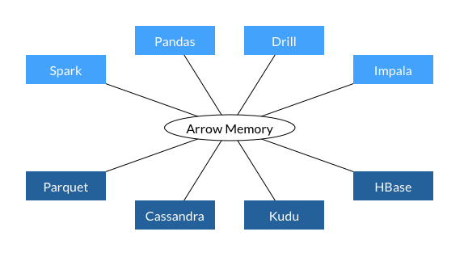

1 Introducción
La limpieza y preparación de datos es una de las tareas más arduas y, paradójcamente, menos valoradas dentro de los proyectos de ciencia e ingeniería de datos. Basta consultar un informe sobre cualquier proyecto de ciencia de datos, ya sea académico o industrial, para corroborar que la mayor parte del esfuerzo se dedica a esta parcela del trabajo, mientras que las tareas de selección y ajuste de modelos y algoritmos, análisis, y visualización de datos suelen recibir mayor atención y reconocimiento.
Dasu y Johnson [1] afirman que la preparación de datos “puede consumir hasta un 80% del tiempo total de un proyecto” de ciencia de datos y que, a su vez, este esfuerzo “determina el 80% del valor de los resultados finales de minería de datos”. Esta afirmación continúa vigente hoy en día, y está respaldada por numerosos estudios y experiencias en la industria. La preparación de datos incluye diversas tareas como su limpieza, transformación (a veces denominada feature engineering), la integración de datos, la imputación de datos, la selección de características, la anonimización, la eliminación de datos duplicados, entre otras. Cada tarea puede ser crucial para garantizar que los datos estén en un formato adecuado y sean de alta calidad antes de ser utilizados en fases posteriores de nuestro proyecto.
Por otro lado, si el principal objetivo de la preparación de datos es poder garantizar su calidad, debemos utilizar mecanismos de validación y verificación de datos que nos permitan evaluar dicha calidad y detectar posibles problemas. Muchos textos de referencia sobre preparación de datos incluyen capítulos dedicados a la validación y verificación de datos, y algunos incluso proporcionan herramientas y técnicas específicas para llevar a cabo estas tareas. En la parte final de este curso se describen algunos métodos de validación de datos ampliamente utilizados en la industria, así como herramientas de software que pueden facilitar esta tarea.
Existen otras tareas relacionadas con la preparación de datos que no se abordan en este curso. Por ejemplo, la obtención obtención de datos es una tarea también compleja, para la que se requiere combinar conocimientos de programación, bases de datos, redes y sistemas distribuidos. Este proceso implica la recopilación de datos de diversas fuentes, como bases de datos relacionales, archivos planos, APIs web o sensores IoT, entre otros. Además, es importante considerar aspectos éticos y legales relacionados con la obtención y uso de datos, como la privacidad y la protección de datos personales. Ninguno de estos aspectos se aborda en este curso, pero se recomienda a los estudiantes que se familiaricen con ellos y busquen recursos adicionales para profundizar en ellos.
A continuación, se resumen de forma breve las principales partes de este curso y los temas que se abordarán en cada una de ellas.
1.1 Almacenamiento y representación de datos
Tras completar la obtención de datos, una de las primeras decisiones que debemos tomar es cómo representarlos y almacenarlos. La elección de los formatos de representación y almacenamiento de datos tiene un impacto muy significativo en la eficiencia de muchas tareas posteriores de preparación de datos, así como en el rendimiento en la ejecución de los modelos y algoritmos que se utilicen para analizarlos.
Los recursos de computación disponibles suelen ser determinantes para decidir qué formatos de representación y almacenamiento de datos son los más adecuados. Un proyecto que se ejecute en un entorno de computación distribuida, como un clúster de servidores o la nube, puede requerir formatos de representación y almacenamiento de datos diferentes a los que se utilizarían en un proyecto que se ejecute en un entorno de computación local, como un ordenador personal o un servidor dedicado. Además, la elección de los formatos de representación y almacenamiento de datos también puede depender del tipo de datos que se estén manejando, como datos estructurados, semiestructurados o no estructurados, así como de los requisitos de rendimiento y escalabilidad del proyecto. Por ejemplo, los datos estructurados suelen representarse y almacenarse en archivos CSV o en bases de datos relacionales, mientras que los datos semiestructurados y no estructurados pueden requerir formatos de representación y almacenamiento más flexibles, como JSON, o bases de datos NoSQL.
Más recientemente, se han desarrollado nuevos formatos de representación y almacenamiento de datos que permiten un acceso más rápido y eficiente, como Parquet, Avro o ORC. Una propiedad común de todos ellos es que adoptan un sistema de almacenamiento columnar, lo que facilita la lectura y escritura de grandes volúmenes de datos, así como la ejecución de consultas analíticas complejas. Además, suelen incluir mecanismos de compresión y codificación de datos que reducen el tamaño de los archivos y mejoran el rendimiento en la transferencia de datos entre sistemas. Estos formatos están diseñados para optimizar el rendimiento en entornos de computación distribuida y son ampliamente utilizados en proyectos de análisis de datos a gran escala. Sin embargo, también pueden ser utilizados en proyectos de menor escala, siempre que se disponga de los recursos de computación necesarios para aprovechar sus ventajas como, por ejemplo, unidades de almacenamiento de estado sólido (SSD, NVMe) o memoria RAM de alta capacidad.
Los formatos de representación de datos en memoria también juegan un papel trascendental para acelerar el procesamiento de datos. Por ejemplo, Apache Arrow ofrece un acceso rápido y eficiente, incrementando el rendimiento en la ejecución de algoritmos y modelos de aprendizaje automático. Además, suelen ser compatibles con múltiples lenguajes de programación y bibliotecas de análisis de datos, lo que facilita su integración y el intercambio de datos entre diferentes herramientas y entornos. En la actualidad, Apache Arrow soporta múltiples lenguajes de programación, como Python, R, Java, C++ y Go, entre otros. Además, existen bibliotecas y frameworks que permiten trabajar con Apache Arrow de manera más sencilla y eficiente, como PyArrow para Python, Arrow.jl para Julia o Arrow for R para R.


1.2 Validación y verificación de datos
Una vez que los datos han sido obtenidos y representados en un formato adecuado, es fundamental evaluar su calidad y detectar posibles problemas. La validación y verificación de datos son tareas esenciales para garantizar que los datos sean precisos, completos, consistentes y fiables antes de utilizarlos. Si bien la validación y verificación de datos pueden realizarse en cualquier etapa del proceso de preparación de datos, es recomendable llevarlas a cabo lo antes posible para evitar que los problemas se propaguen y afecten a las fases posteriores del proyecto. Por ejemplo, transformar datos incorrectos o inconsistentes puede malograr los resultados de un análisis o modelo, y puede requerir un esfuerzo adicional para corregirlos.
La validación de datos se debe afrontar de un modo sistemático y estructurado, utilizando técnicas y herramientas específicas para evaluar la calidad de los datos. Por ejemplo, se pueden utilizar reglas de validación para verificar que los datos cumplan con ciertos criterios, como rangos de valores válidos, formatos de fecha correctos o la ausencia de valores nulos. Además, se pueden emplear técnicas estadísticas para detectar valores atípicos o inconsistencias, así como herramientas de visualización para identificar patrones que sugieran la presencia de errores o anomalías. El paquete Great Expectations [2] en Python es un ejemplo de herramienta de software que permite definir y ejecutar pruebas de validación de datos de manera automatizada, generando informes detallados sobre la calidad de los datos y facilitando la identificación de problemas. Otro ejemplo para R es el paquete validate [3], que proporciona un conjunto de funciones para definir y aplicar reglas de validación a conjuntos de datos, así como para generar informes sobre la calidad de los datos.
1.3 Transformación de datos (feature engineering)
Antes de utilizar los datos en fases posteriores del proyecto, es posible que sea necesario transformarlos para aprovechar todo su potencial durante el análisis o modelado. La transformación de datos, también conocida como feature engineering, implica la creación de nuevas variables o características a partir de las existentes, así como la modificación de los datos para mejorar su calidad y utilidad. Por ejemplo, se pueden crear variables derivadas a partir de otras, como calcular la edad a partir de la fecha de nacimiento, o transformar variables categóricas en variables numéricas mediante técnicas como one-hot encoding o label encoding. Además, se pueden aplicar técnicas de normalización o estandarización para escalar los datos y mejorar el rendimiento de los algoritmos de aprendizaje automático [4].
En muchas ocasiones, las operaciones de transformación requieren un conocimiento profundo del dominio del problema y de los objetivos del proyecto, así como una comprensión de las técnicas estadísticas y de aprendizaje automático que se utilizarán posteriormente. Por lo tanto, es importante que los profesionales de ciencia de datos trabajen en estrecha colaboración con expertos del dominio de aplicación para garantizar que los datos resultantes tras las operaciones realizadas sean relevantes y útiles para el análisis o modelado posterior. Con demasiada frecuencia, el rendimiento de los modelos y algoritmos empleados no alcanza el nivel esperado por no haber realizado una preparación y transformación de datos adecuada.
Se define como feature engineering el proceso de ajustar y remodelar los predictores para permitir que los modelos y algoritmos de aprendizaje automático revelen relaciones entre los predictores y la variable objetivo. Este proceso puede incluir la creación de nuevas características a partir de las existentes, la selección de características relevantes, la transformación de variables, la reducción de dimensionalidad y la combinación de características. La connotación de ingeniería implica que se pueden aplicar, de forma sistemática, una serie de pasos para corregir el pobre rendimiento inicial de nuestros modelos y algoritmos, guiando así el proceso de mejora. No obstante, este proceso también es, en cierta medida, un arte, ya que requiere creatividad y experiencia para identificar las transformaciones más adecuadas y efectivas para cada conjunto de datos y problema específico.
Por último, las técnicas de selección de características permiten identificar y seleccionar las variables más relevantes para el análisis o modelado, eliminando aquellas que no aportan información útil o que pueden introducir ruido . La selección de características puede mejorar la interpretabilidad de los modelos, reducir el riesgo de sobreajuste y disminuir, a veces de forma sustancial, el tiempo de entrenamiento y predicción. Existen diversas técnicas para la selección de características, como métodos basados en filtros, envolventes (wrapper methods) y otros integrados de manera natural en ciertos algoritmos y modelos, cada una con sus ventajas y limitaciones.